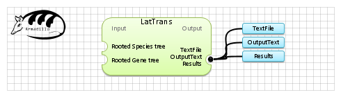

| Name | LatTrans | |
| View |  | |
| Publication(s) | Louigi Addario-Berry, Michael T. Hallett, and Jens Lagergren, Towards Identifying Lateral Gene Transfer Events. Pacific Symposium on Biocomputing 2003: 279-290 | |
| Website | http://www.math.mcgill.ca/louigi/ | |
| Description | Infer Horizontal Gene Transfer Events using the LatTrans algorithm.
by Louigi Addario-Berry, Michael T. Hallett, and Jens Lagergren (2004)
http://www.math.mcgill.ca/louigi/ | |
| Input (2) |
MultipleTrees Tree | |
| Output (3) |
TextFile Results OutputText | |
| Keywords (1) | Horizontal gene transfer detection | |
| Related (2) | HGT Detector 3.2 PhyloNet - RiataHGT | |
| Sample workflow | LaTrans.properties.db |